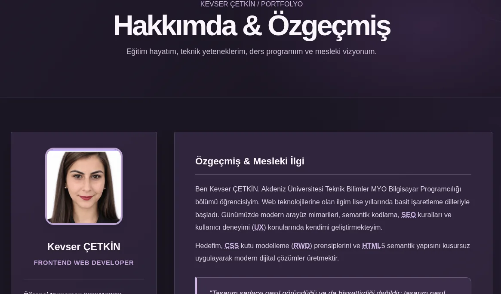

Semantik HTML5 ile Anlamlı Sayfalar
Uzun anlatımı ve örnek çalışmaları sayfaları çevirerek oku
Semantik HTML5 ile Anlamlı Sayfalar
Etkileşimli öğrenme defteri
HTML5 neden önemli?
Bir web sayfası sadece renklerden ve kutulardan oluşmaz. Sayfanın bölümlerini doğru etiketlemek hem kodun bakımını kolaylaştırır hem de içeriği daha anlaşılır kılar. Semantik HTML, bir öğenin ne işe yaradığını adından belli eden etiketleri kullanmaktır. Örneğin başlık alanı için header, gezinme için nav ve ana içerik için main tercih edilir. Bu yaklaşım özellikle büyüyen projelerde işe yarar.
02Sayfanın iskeleti
Bir portfolyo sitesinde en üstte tanıtım alanı, ardından menü, ana içerik ve alt bilgi yer alabilir. Bu bölümlerin her birini uygun HTML5 etiketiyle tanımlamak mümkündür. Bir sayfada birden fazla article olabilir; her article kendi başına anlamlı bir içerik taşımalıdır. section ise bir konu etrafında toplanmış içeriği gruplamak için uygundur.
03Örnek çalışma: Portfolyo iskeleti
Aşağıdaki kısa örnekte menü, içerik ve alt bilgi ayrı bölümlere ayrılmıştır. Bu kodu bir .html dosyasına kaydedip tarayıcıda açarak sonucu inceleyebilirsin. Bu örnek öğretim amaçlıdır; kullanıcının yaptığı bir ders çalışması olduğu iddia edilmez.
04Kod Örneği
Bu küçük örneği kendi deneme dosyanda uygulayabilirsin.
<header>Merhaba!</header>
<nav><a href="#hakkimda">Hakkımda</a></nav>
<main><section id="hakkimda">
<h1>Portfolyom</h1>
<p>Web tasarımını öğreniyorum.</p>
</section></main>
<footer>2026</footer>Başlık hiyerarşisi
Başlıklar yalnızca yazıyı büyütmek için kullanılmamalıdır. H1 sayfanın ana konusunu, H2 alt bölümleri, H3 ise bunların alt başlıklarını anlatabilir. Bu projenin ödev yönergesinde her sayfada bir H1 isteniyor. Genel HTML standardında her koşulda tek H1 zorunlu değildir; ancak ödevde belirtilen kurala uymak önemlidir.
06Görsel Örnek
Kendi portfolyomdaki Hakkımda sayfasının gerçek ekran görüntüsü: sayfa başlığı, navigasyon ve ana içerik bölümleri.

Kendi sitemden alınan gerçek ekran görüntüsü · Hakkımda sayfası
07Erişilebilirlik ayrıntıları
Görseller için anlamlı alt metin yazmak, klavyeyle erişilebilen bağlantılar kullanmak ve form alanlarını label ile eşleştirmek erişilebilirliği destekler. Sırf görünüş için kullanılan dekoratif görsellerde boş alt metin tercih edilebilir. Bağlantı metninin “buraya tıkla” yerine hedefi açıklaması da kullanıcıya yardımcı olur.
08Kontrol listesi
Sayfayı teslim etmeden önce başlık sırasını, bağlantıları, resimlerin alt metinlerini ve telefon görünümünü kontrol et. HTML doğrulama araçları bazı yapısal hataları gösterebilir. En önemlisi, etiketleri sadece kurala uymak için değil, içeriği gerçekten tanımlamak için kullanmaktır.
09Şimdi Sen Dene
Küçük bir örnek sayfa oluştur, farklı ekran genişliklerinde dene ve öğrendiklerini not et.
10Okuduğun için teşekkürler
Diğer yazılar için bloga dönebilirsin.
✦
Sayfaya dokunarak, ok tuşlarıyla veya telefonda kaydırarak çevirebilirsin